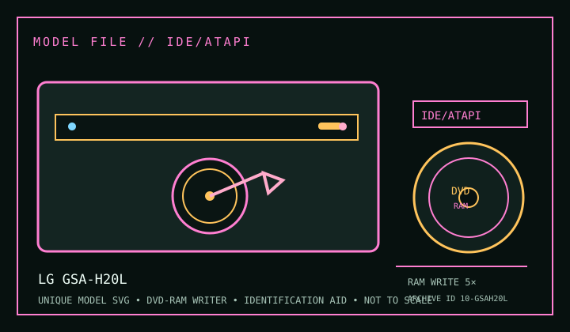

[ DVD-RAM WRITERS // IDENTIFIED MODEL ]
LG GSA-H20L
DVD-RAM read/write support with model-specific optical-media and host details below. Maximum speeds are ratings, not sustained guarantees; firmware, media revision and operating mode matter.

IDENTIFICATION: Match the full label, suffix, OEM part number and firmware against the cited documentation before installing, burning or using this mechanism for preservation reads. Closely named revisions are not assumed interchangeable.
Documented specifications
| Catalog subcategory | DVD-RAM writers |
|---|---|
| Exact model | LG GSA-H20L |
| Readable media | CD-ROM, CD-R/RW; DVD-ROM, DVD±R, DVD±RW, DVD±R DL and DVD-RAM. DVD-RAM rated read/write ceiling is 5×; consult the exact manual for supported disc versions. |
| Recordable media | DVD-RAM up to 5×; DVD±R up to 16×; DVD+R DL up to 8× and DVD-R DL up to 4×; DVD+RW up to 8×; DVD-RW up to 6×; CD-R up to 48×; CD-RW up to 32×. |
| DVD-RAM rating | Read/write up to 5×; actual operation depends on supported DVD-RAM version, disc condition, firmware and host software. |
| Interface / mechanics | Enhanced-IDE / ATAPI (PATA); 5.25-inch internal half-height. Check mounting, connector pinout, bay/caddy and power before installation; this record does not claim an unverified dimension or adapter pinout. |
| Host / software compatibility | Internal 5.25-inch half-height PATA writer. Requires a compatible IDE/ATAPI controller, 40-pin cable, power and correct master/slave/cable-select setup. LightScribe labelling needs compatible host software/media; DVD-RAM packet writing/UDF is a separate host OS and application capability. |
| Model distinction | GSA-H20L includes LightScribe and uses PATA/ATAPI. Do not infer its media rates from related GSA-H20N or later LG SATA models. |
Media and host notes
- DVD-RAM is a rewritable random-access format, but only versions and cartridge types listed for the exact unit should be used; physical cartridge compatibility is not inferred from the DVD-RAM logo.
- For DVD-RAM drag-and-drop or packet-written use, confirm host UDF/filesystem and application support. A drive that can write DVD-RAM does not guarantee operating-system mounting or packet writing.
- Internal 5.25-inch half-height PATA writer. Requires a compatible IDE/ATAPI controller, 40-pin cable, power and correct master/slave/cable-select setup. LightScribe labelling needs compatible host software/media; DVD-RAM packet writing/UDF is a separate host OS and application capability.
- Record drive label, firmware, controller, OS, software, disc version, write mode and verification result with each preservation image; retain checksums and error logs.
Protect recordable discs from heat, sunlight, scratches and contamination. Handle by the edge or hub and store in a case. Test each media batch before relying on it as the sole copy.
Sources
- LG GSA-H20L owner’s manualModel-specific manual for the exact GSA-H20L; consult its media table and match revision to the drive label.
- LG GSA-H20L user manual (second archive)Independent model-specific manual listing for cross-checking supported media and setup.
- Ecma-330 — 120 mm DVD-RAM disksDVD-RAM format reference, not a guarantee of model compatibility.